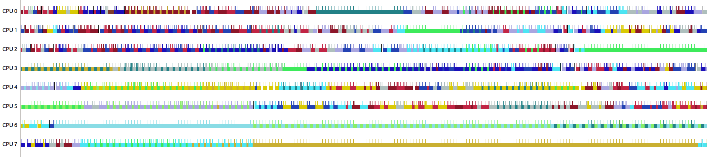
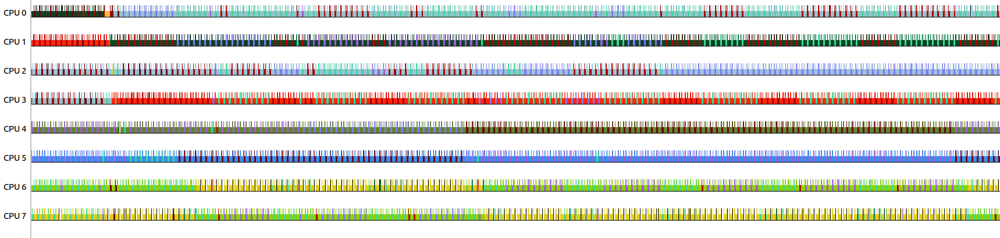

Figure 1. Scheduling classes managed with singly linked list
The Linux kernel scheduler (or the task scheduler) is a complicated beast and a lot of effort goes into improving it during every kernel release cycle. The 5.4 kernel release will enable users to improve scheduling latency of their high-priority (interactive) tasks by using SCHED_IDLE scheduling policy for the really low priority (background) tasks.
The Linux kernel scheduler consists of many "scheduling classes", an extensible hierarchy of scheduling modules, and each class may further encapsulate "scheduling policies" which are handled by the scheduler core in a policy independent way.
The scheduling classes are represented by the struct sched_class:
|
This structure mostly consists of function pointers or callbacks, like
enqueue_task(), dequeue_task(), etc., to class specific implementations
which are called by the scheduler core in a class independent manner. The
classes are kept in a singly linked list in descending order of their
priorities; the HEAD node points to the Stop scheduling class which has the
highest priority in the scheduler and the last node in the list is the Idle
class which has the lowest priority.
Figure 1. Scheduling classes managed with singly linked list
The Linux kernel calls schedule() when it needs to pick a new task for the
current cpu, which further calls pick_next_task() to find the next task that
should run on this cpu. pick_next_task() traverses the list of scheduling
classes, with the help of for_each_class() macro, to find the highest priority
scheduling class that has a task available to run. Once a task is found
successfully, it is returned to the caller, which will then execute it. There
should always be a task available to run in the Idle class, which will run
only if there is nothing else for the scheduler to do and that task is called as
the idle thread, which puts the cpu(s) in various idle states.
|
The scheduling classes and policies managed by the Linux kernel scheduler are:
|
The scheduling classes are mentioned here in decreasing order of their priorities; stop class has the highest priority, and idle class has the lowest.
The Stop scheduling class is a special class which is used for the internal
working of the kernel. It doesn’t implement any scheduling policies and no user
task ever gets scheduled on it. The Stop class is rather a mechanism to stop
running everything else and run a specific function on a cpu. As this is the
highest priority class, it can preempt everything else and nothing ever preempts
it. Since it is used to stop another cpu to run a specific function, it is only
available on SMP systems. This creates a per-cpu kernel thread (or kthread)
which is named migration/N, where N is the cpu number. This class is used by
task migration, cpu hotplug, RCU, ftrace, clockevents, etc. in the kernel.
The Deadline scheduling class comes after the Stop class and is the scheduling
class of the highest priority user tasks. It implements the SCHED_DEADLINE
scheduling policy with the help of red-black tree which is a self balancing data
structure. This class is used for tasks with hard worst case deadlines, like
video encoding and decoding. A request for changing scheduling policy of a task
to SCHED_DEADLINE can be rejected by the Deadline class if it can’t guarantee
enough cpu time for a new request, as all the cpu time is blocked for other
deadline tasks. The tasks are run on a cpu based on their deadlines, hence a
task with the earliest deadline runs first.
The POSIX Realtime (aka RT) scheduling class comes after Deadline class
and is used for short latency sensitive tasks, like IRQ threads. This is a fixed
priority class and it schedules a higher priority task before a lower priority
task. This implements two scheduling policies, SCHED_FIFO and SCHED_RR. In
SCHED_FIFO (or first in first out), a tasks runs until it leaves the cpu by
itself, either because it is waiting for a resource or it has completed its
execution. In SCHED_RR (or round-robin), a task will run for the maximum
quantum of time (also called as time slice), if the task doesn’t block before
the end of its time slice, the scheduler will put it at the end of the
round-robin queue of tasks with the same priority and select the next task
to run. Both the policies are implemented using linked lists here. The
priorities of the tasks in RT class range from 0 (highest) to 99 (lowest).
The CFS scheduling class hosts most of the user tasks and it implements three
scheduling policies, SCHED_NORMAL, SCHED_BATCH and SCHED_IDLE. A task in
any of these policies gets a chance to run only if there are no tasks enqueued in
the Deadline or Realtime runqueues. The policies in CFS are implemented using
the red-black trees, which use virtual runtime (aka vruntime) to balance
themselves for this class. Vruntime is the amount of time a task was able
to run, and a task with the smallest vruntime gets a chance to run next. The
priority of a task is calculated by adding 120 to its nice value, which ranges
from -20 to +19. The priority of the task is used to set the weight of the task,
which in turn affects the vruntime of the task; lower the nice value, higher is
the priority, higher will be the weight, slower will the vruntime increase and
more will the task run. The SCHED_NORMAL policy is used for most of the tasks
that run in a Linux environment, like the shell. The SCHED_BATCH policy is
used for batch processing of the non-interactive tasks, where the tasks should
run uninterrupted for a sufficient amount of time and hence they are normally
scheduled only after finishing the SCHED_NORMAL activity. The SCHED_IDLE
policy is designed for the lowest priority tasks in the system and will get a
chance to run only if there is nothing else to run. The priority of these tasks
is considered even lower than the tasks with nice value of +19, as the
SCHED_IDLE tasks get preempted immediately even by the SCHED_NORMAL task
with nice value of +19. This policy isn’t widely used currently and efforts are
being made to improve its support, so people start using it in their mainstream
solutions; that is the motivation of this article as well, we will discuss more
on SCHED_IDLE in a bit.
Last but not the least is the Idle scheduling class (don’t confuse it with the
SCHED_IDLE scheduling policy). This is the lowest priority scheduling class
and similar to the Stop class, this doesn’t manage any user task and so
doesn’t implement a policy. It only keeps a per-cpu kthread which is named
swapper/N, where N is the cpu number. These kthreads are also called as the
idle-threads. These are responsible for saving power by putting the cpus in deep
idle states when there is nothing else to run on them.
When a newly wakeup task is available to run, the scheduler core finds a target
runqueue (i.e. a cpu to run it on) by calling the .select_task_rq() callback
for the respective scheduling class. This returns the cpu number where the task
should be enqueued. Once the task is enqueued on that cpu by the scheduler core,
it checks if the newly enqueued task shall preempt the currently running task on
that CPU by calling the .check_preempt_curr() callback of the class.
For the CFS scheduler, the SCHED_IDLE policy was treated specially here in the
.check_preempt_curr() callback, where a currently running SCHED_IDLE task
gets immediately preempted by a SCHED_NORMAL or SCHED_BATCH task. It makes
sense to have this behavior as the SCHED_IDLE policy has the lowest priority,
but the problem was that many times the tasks were not getting queued on such
cpus (which are queued with only SCHED_IDLE tasks) at all because the
scheduler was not treating such cpus differently in the .select_task_rq()
callback.
The 5.4 kernel release has a
patchset
which makes necessary changes to CFS’s .select_task_rq() callback, i.e.
pick_next_task_fair(), to allow tasks to get queued more aggressively on such
cpus, i.e. cpus queued with only SCHED_IDLE tasks. Ideally the scheduler tries
to spread the tasks on cpus by trying to find an idle cpu for queuing a newly
wakeup task. With the news changes, after checking if a cpu is idle or not, we
also check if the cpu is queued with SCHED_IDLE tasks only or not and queue
the newly wakeup task on that cpu if the cpu is queued with only SCHED_IDLE
tasks. Both fast and slow paths are updated in pick_next_task_fair() with this
change. The scheduler will now prefer to queue the newly wakeup tasks on cpus
with only SCHED_IDLE activity and the newly queued task will immediately
preempt the currently running SCHED_IDLE task on a call to the
.check_preempt_curr() callback. This further reduces the latency to schedule
the newly queued task as compared to selecting a fully idle cpu, as we don’t
need to bring an idle cpu out of its deep idle state which normally takes a few
milliseconds to complete (i.e. cpu’s exit latency).
The patchset was initially tested on ARM64 octa-core Hikey platform, where all CPUs change frequency together, with the help of rt-app; rt-app is a test application that starts multiple periodic threads in order to simulate a real-time periodic load.
The following json schema was used with the rt-app:
|
This schedules eight tasks with SCHED_OTHER policy (in the Linux kernel source
code, the SCHED_OTHER policy is actually named SCHED_NORMAL) and five tasks
with SCHED_IDLE policy. The tasks aren’t bound to any particular cpu and can
be queued anywhere by the scheduler. The SCHED_NORMAL tasks execute (busy
loops) for 5333 us for a period of 7777 us and the SCHED_IDLE tasks keep on
running forever if they get scheduled. The idea here was to find if the
SCHED_NORMAL tasks are getting scheduled together (i.e. preempt each other) or
if they are able to successfully preempt other SCHED_IDLE tasks after the
patchset is applied. The result showed that the average scheduling latency
(wu_lat field in rt-app results) for the SCHED_NORMAL tasks reduced to 102
us after the patchset was applied, while it was 1116 us with the
5.3 kernel release; i.e. reduction of around 90% in the scheduling latency of
the SCHED_NORMAL tasks, which looks quite promising.
The same behavior can be observed with the traces captured before (v5.3) and after (v5.4-rc1) this patchset was applied. The traces are shown here with the help of the KernelShark tool.

Figure 2. V5.3 kernel, without SCHED_IDLE improvements
If you look closely at the above figure, you can see that sometimes for long
duration of time few cpus were running only a single task (solid single color
lines) without getting preempted to run another task. The long running tasks are
the SCHED_IDLE tasks which should ideally get preempted by the SCHED_NORMAL
tasks, but that wasn’t happening then.

Figure 3. V5.4-rc1 kernel, with SCHED_IDLE improvements
If you look closely at the above figure, you can see that the pattern is quite
consistent now and it doesn’t vary too much. The SCHED_IDLE tasks get
preempted by the SCHED_NORMAL tasks as soon as one is available to run, which
then runs for 5333 us and then gives back the cpu to SCHED_IDLE task. This is
exactly the behavior we were looking for.
Recently, Song Liu from Facebook was trying to solve a problem with facebook servers, which he described as:
Servers running latency sensitive workload usually aren't fully loaded
for various reasons including disaster readiness. The machines running
our interactive workloads (referred as main workload) have a lot of
spare CPU cycles that we would like to use for optimistic side jobs like
video encoding. However, our experiments show that the side workload has
strong impact on the latency of main workload.He gave the SCHED_IDLE patchset a try and
found
out that it solved the problems he was facing to a great extent; though he
tested an earlier version of the patchset where only the fast path was updated,
he is yet to test the patchset that got merged.
Another potential user of this work is Google’s Android operating system. Todd
Kjos from Google earlier said this in reply to the SCHED_IDLE work:
We haven't had a chance to test this yet, but it is very interesting for
Android. Android has knowledge about the importance of a task for the
current user's experience ranging from "background" (not important) to
"top-app" (most important). Android currently uses EAS+sched-tune where
sched-tune provides a mechanism for userspace to give hints to the
scheduler (sched-tune is expected to be replaced by the util-clamp
patches currently being discussed on the list). For "top-app" tasks,
EAS prefers to wake on idle CPUs (spread policy instead of energy
optimized).If we had this SCHED_IDLE patchset, we'd tend to set all "background"
tasks to SCHED_IDLE, so this scheme would increase the probability of
finding an idle CPU for "top-app" tasks by preempting "background"
tasks.Clearly this work has a lot of potential and finally we must be using the
SCHED_IDLE policy in mainstream products. Going forward, we shall revisit
other places in the scheduler code, like the load-balancer, to see if we can
further reduce the latency of the non SCHED_IDLE tasks.
Last updated 2019-10-25 13:48:02 IST